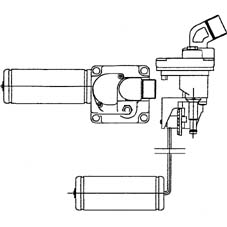

1043AF TANK FILLING RESTRICTER VALVE OPERATION CHECK
- Path
- Test > 10 ENGINE > 1043 GPL TANK AND PIPES > 1043A GPL TANK > 1043AF TANK FILLING RESTRICTER VALVE OPERATION CHECK
- Kind
- test / check procedure
- Applies to
- engines: 2.0 16V; all production periods; only with equipment: GPL
- Interactive page
- https://sloeber94.github.io/elrnDB-fDct/en/#/244000537
Applies to: all engines; all production periods; only with equipment: GPL
Secure the valve in a vice. Close the jaws with the float in lowered position.
Blow air from the charge fitting.
Lift up the float with your left hand and check the air flow is interrupted.
